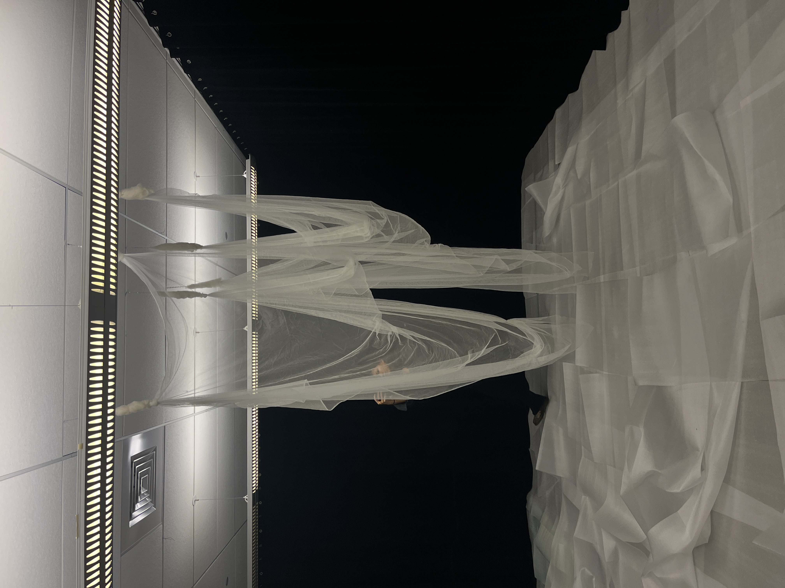

Abiogenesis
CLICK TO EXPLORE
Abiogenesis
Generative / Interactive · 2024
A study of how order seems to emerge from disorder — simple rules layered on top of each other until something that reads as "alive" appears on screen. The piece treats the origin of life as a formal problem: what is the minimum amount of structure needed before a system looks like it's making its own decisions?
Method
Generative still, rendered from a rule-based growth system.